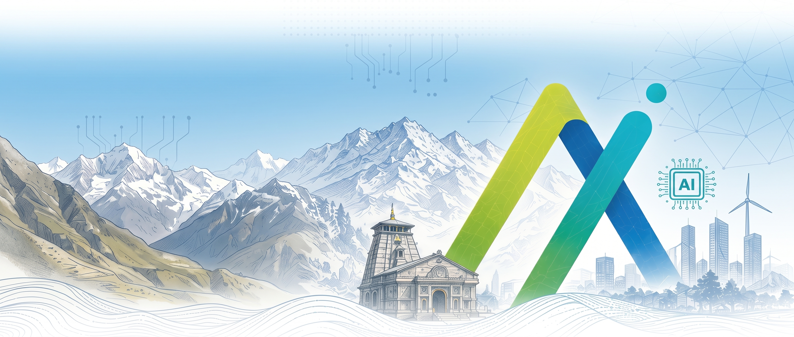

UKIS
Respected government officials, faculty members, industry colleagues, and most importantly, the students here today: welcome.
Today is not only the beginning of a hackathon. It is an attempt to connect the talent already in Uttarakhand with work that matters.
Let me start with how we got here. In our work with ITDA, one idea has kept coming up: the need for an ecosystem. What does that actually mean for a student sitting in this room?
How we got here
An ecosystem starts when work and talent meet.
Work
Real needs. Real responsibility. Real opportunities.
↔Talent
People who can understand, build and deliver useful solutions.
Neither side grows in isolation.
An ecosystem is more than a collection of buildings, companies or events. At its heart, it needs two things: meaningful work and people who can do that work.
Industry needs talent. Talent needs opportunities. Government sees real needs in public services and needs practical, dependable solutions.
The challenge is not simply to produce more graduates or announce more projects. It is to help these sides find each other, work together, and build trust.
Two perspectives · The same dilemma
Both sides are caught in the same loop.
For a student
“How do I get my first chance?”
Job↔Experience
A job asks for experience. Experience needs a chance to work.
For industry & government
“Who can we trust to deliver?”
Talent↔Opportunity
Work needs proven talent. Talent needs real work to prove itself.
To the students: you may already recognise this dilemma. A job needs experience, but experience seems to need a job. Where do you begin?
College is fun, but at some point “career” becomes part of every conversation. Career mein kya hoga? Ho bhi payega ya nahi?
Now look at the other side. An employer asks: who can take responsibility and deliver? A government department asks: who understands our problem well enough to build something useful?
These are not two unrelated problems. They are the same cycle viewed from opposite sides.
Why technology hubs matter
Opportunity grows where work and talent stay connected.
BengaluruHyderabadPuneSilicon Valley
Work attracts talent. Talent attracts more work.
The question for us: how do we start that connection here?
Think about the technology hubs we all know: Bengaluru, Hyderabad and Pune in India, and Silicon Valley globally.
They have different histories. But one thing they illustrate is how opportunity compounds when people, companies, institutions and work are close enough to keep learning from one another.
We do not need to copy another city. We need to ask what it would take to build that connection here, using Uttarakhand’s own strengths.
The student’s challenge has changed
AI has changed what it takes to stand out.
When I was in college
“I can make it work.”
Writing working code was a strong signal of technical ability.
In an AI-assisted world
“I can make it matter.”
Tools can generate code. You still own the problem, the judgement and the outcome.
Use AI as leverage. Keep responsibility for the result.
I graduated about five years ago, so there is not a huge generational gap between us. But the tools have changed dramatically.
When I was in college, simply getting difficult code to work felt like a milestone. That could be enough for an employer to see potential and invest in developing you.
Today, a prompt can produce a prototype remarkably quickly. That does not mean engineering no longer matters. It means the signal is changing.
Can you choose the right problem? Can you check whether the output is correct? Can you build something reliable and useful? AI can help you move faster. It cannot remove your responsibility for the result.
Two perspectives · A shared answer
Both sides need proof, not just potential.
For a student
“Here is what I solved.”
Understand a real user. Build and test a solution. Show what improved.
For industry & government
“Here is why we can trust it.”
See practical value. Examine evidence and limits. Evaluate the people behind it.
So how do you show that you are someone worth betting on?
Not only by saying, “I know this language,” or “I used this model.” Show a real problem you understood, a solution you tested, and evidence of what changed.
For industry and government, that creates something concrete to evaluate: the usefulness of the solution, its limitations, and the judgement of the team that built it.
Neither side needs magic. Both need a credible way to see what the other can do.
The way in
Break the cycle. Solve something real.
Show impact, not just code.
A real problem
A tested solution
Evidence of value
The answer is simple to say, even if it takes hard work to do: solve a real-world problem.
Show impact rather than code alone. That does not have to mean claiming you transformed an entire department. It might mean a task takes less time, a warning arrives earlier, or a user can find the information they need.
Measure honestly. Show what works and what does not. That is a much stronger story than a polished demo with no evidence behind it.
And that is exactly where our hackathon comes in.
Uttarakhand Innovation & Solutions Hackathon
UKIS is a cohort, not a weekend.
90days to learn, build and improve.
01
Online hackathon
Understand a government challenge. Develop your approach.
02
Evaluation & shortlisting
Show relevance, practicality and a credible execution plan.
03
On-ground hackathons
Rudrapur · Roorkee · Dehradun, leading to final culmination.
This is not a two-day burst of energy followed by everyone going home. UKIS is designed as a ninety-day innovation and learning journey.
You begin with a real government challenge and develop an approach through the online stage. Evaluation and shortlisting look at relevance, practicality and how you intend to execute.
The programme then moves into on-ground hackathons across Rudrapur, Roorkee and Dehradun, leading to the final culmination. Detailed schedules are communicated through the programme.
The purpose is not just to judge talent at the end. It is to help develop talent along the way.
Examples from the published challenge catalogue
Public problems give technology a human purpose.
Forest Department
Earlier forest-fire warnings.
Can better signals help teams identify risk and respond sooner?
Social Welfare
Better access to welfare.
Can data help identify eligible citizens who are being left out?
Transport
Smarter traffic decisions.
Can useful insights improve how congestion and parking are managed?
Real users. Real constraints. Outcomes worth working towards.
Why government problems? Because public services bring us close to needs that affect many people, across very different parts of this state.
Our published challenges include forest-fire intelligence, welfare beneficiary data and traffic management. These are not imaginary assignments created just for a competition.
For a forest officer, a useful warning matters more than an impressive model name. For a citizen, being able to access an eligible benefit matters more than a dashboard.
These are goals to work towards, not claims that our prototypes have already delivered them. Use authorised data, protect privacy, and include human review wherever decisions affect people.
Industry guidance · A learning community
You build the solution. Mentors help you build it well.
Selected listed mentors; participation subject to availability. Affiliations identify professionals, not company sponsorship.
You will not learn only from the problem statement. The programme brings industry perspectives through mentor conversations, technical reviews, workshops and expert sessions.
These are a few of the professionals listed in our mentor community. Their company affiliations describe their experience; they do not mean their employers are sponsoring the hackathon.
Use those interactions well. Ask how to scope a problem, choose an architecture, test assumptions and explain trade-offs. That is how you start to understand the way real solutions are built.
The mentor does not build the project for you. You own the work. The guidance helps you grow through it.
From demonstrated ability to opportunity
Let your work open the conversation.
Build
Demonstrate
Meet hiring teams
PACE
Hiring & Mentorship Partner
Cruv Dimension
Hiring Partner
MetaSquare
Hiring Partner
Tekclap
Tekclap
Hiring Partner
Career opportunities depend on partner requirements and selection. Participation does not guarantee a job or internship.
Once you have built something real, the next step is to make that work visible.
Through our hiring partners, including PACE, Cruv Dimension, MetaSquare and Tekclap, the programme aims to connect demonstrated ability with career conversations.
The important distinction is that this is an opportunity, not an automatic job offer. Each partner has its own requirements and selection process.
But now you have something stronger to take into that conversation: a problem you understood, decisions you can explain, and work someone can actually evaluate.
The ecosystem we are trying to build
One cohort can start a cycle that grows.
01 · Government
Real problems
Needs and domain context.
02 · Students + mentors
Stronger talent
Learning through building.
03 · Demonstrations
Visible proof
Useful work others can evaluate.
04 · Industry
New opportunities
Career and collaboration pathways.
↶ New opportunities bring work and learning back into the next cycle.
Today’s builders. Tomorrow’s mentors, founders and employers.
Now return to the cycle we started with. Government contributes real problems and context. Students develop solutions with guidance. Demonstrations make that ability visible. Industry can then evaluate talent and explore opportunities.
If we do this well, the cycle does not end with one cohort. People who gain experience can return as mentors. Some may become founders or employers. Their work can create opportunities for the next group.
This is an ambition we have to earn through repeated, useful work. A prototype is not an automatic government deployment or procurement commitment; any next step needs evaluation and the appropriate approvals.

A shared ambition for this place
Doon Valley can become an AI valley.
The talent is here. The next step is to make its work visible.
Rooted in Uttarakhand. Building for the world.
I have lived in many cities across India and travelled around the world. But for me, there is something special about this state, and about Dehradun.
The Doon Valley lies between the Ganga and Yamuna river systems, with the mountains close by. It is a place with its own character and extraordinary potential.
We already have institutions such as Graphic Era, and students who bring different experiences and ambitions into the same room. The talent is here.
So why can’t Doon Valley become an AI valley? Not just as a slogan, and not as a claim that it has already happened. As something we build: useful work, visible talent, and a reason for the world to bring its next problem here.
Pause on the question before advancing.
An invitation to everyone in this room
Each of us has a part in making this real.
Students
Stay curious. Build responsibly. Show evidence, not just a demo.
Government
Bring real context. Help teams understand what useful means.
Institutions
Make room for applied learning. Help teams keep going.
Industry & mentors
Share practical feedback. Recognise talent through its work.
This needs all of us, not just the students.
To our government colleagues: your context and feedback help teams understand what a useful solution really requires.
To our institutions and faculty: your encouragement can help students turn initial enthusiasm into sustained effort.
To industry and mentors: share the standards and judgement that students do not always get to see in a classroom. Look at their work, and recognise potential when it is backed by effort and evidence.
And to students: use the tools available to you, but do not outsource your curiosity or your responsibility.
UKIS 2026 · Let’s begin
Don’t just show us your code. Show us what changed.
Choose a real problem. Build with purpose. Grow together.
From Uttarakhand, for the world.
To everyone helping make this possible—ITDA, our government colleagues, institutions, mentors, industry partners, and the organising team—thank you.
To the students: you do not need to wait until someone gives you a job before you begin doing meaningful work. This is a chance to start learning through a real problem, alongside people who can challenge and support you.
Over this journey, do not just show us how much code you wrote. Show us what you understood. Show us what you tested. Show us what changed.
Let us build something useful, and let that be the beginning of something bigger for Uttarakhand.
Thank you. Let’s begin.

 With ITDA support
With ITDA support